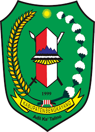

Peta Web Lokasi Populer di Kabupaten Bengkayang, Provinsi Kalimantan Barat
(Versi 11.2024)
Kabupaten Bengkayang

Kabupaten Bengkayang adalah salah satu kabupaten yang terletak di Provinsi Kalimantan Barat, Indonesia. Kabupaten ini berbatasan langsung dengan negara Malaysia di sebelah utara, menjadikannya salah satu wilayah yang memiliki peran strategis dalam hubungan internasional, terutama dalam konteks perdagangan dan pengelolaan perbatasan. Kabupaten ini memiliki ibukota yang terletak di Kota Bengkayang.
Wilayah Kabupaten Bengkayang dikenal memiliki bentang alam yang sangat beragam, terdiri dari dataran rendah, perbukitan, hingga pegunungan. Salah satu ciri khasnya adalah keindahan alam yang alami, seperti pegunungan, air terjun, dan hutan tropis yang lebat. Kawasan ini juga menjadi rumah bagi berbagai flora dan fauna khas Kalimantan, menjadikannya kaya akan potensi keanekaragaman hayati. Selain itu, kabupaten ini juga memiliki beberapa sungai besar yang menjadi sumber kehidupan bagi masyarakat, baik sebagai sarana transportasi, irigasi, maupun pemenuhan kebutuhan air sehari-hari.
Penduduk Bengkayang terdiri dari beragam suku, dengan mayoritas berasal dari suku Dayak, Melayu, dan Tionghoa, meskipun ada pula kelompok etnis lainnya. Keberagaman ini tercermin dalam tradisi, budaya, dan bahasa lokal yang digunakan. Salah satu tradisi yang khas adalah budaya Dayak yang ditandai dengan ritual adat, seni ukir, dan kehidupan yang erat kaitannya dengan alam. Keragaman ini juga memperkaya kuliner lokal yang banyak dipengaruhi oleh tradisi masing-masing suku.
Kabupaten Bengkayang memiliki sektor ekonomi yang didominasi oleh pertanian, perkebunan, dan kehutanan. Komoditas utama yang dihasilkan meliputi padi, karet, dan kelapa sawit. Selain itu, kawasan ini juga memiliki potensi pariwisata yang besar, terutama dengan adanya berbagai destinasi alam seperti Gunung Bawang, Air Terjun Riam Merasap, dan Pantai Pasir Panjang. Beberapa destinasi ini mulai dikembangkan untuk menarik wisatawan lokal dan internasional, sekaligus menjadi sumber pendapatan tambahan bagi masyarakat.
Namun, seperti banyak wilayah lain di Indonesia, Kabupaten Bengkayang juga menghadapi berbagai tantangan. Salah satu tantangan utamanya adalah aksesibilitas. Meski beberapa wilayah dapat diakses dengan kendaraan darat, ada daerah-daerah terpencil yang masih sulit dijangkau karena kondisi infrastruktur yang belum memadai. Selain itu, sebagai daerah perbatasan, kabupaten ini juga menghadapi tantangan dalam menjaga kedaulatan dan mengelola hubungan sosial-ekonomi dengan wilayah tetangga di Malaysia.
Pemerintah Kabupaten Bengkayang terus berupaya untuk meningkatkan pembangunan di berbagai sektor, termasuk infrastruktur, pendidikan, dan kesehatan. Mereka juga berusaha mendorong partisipasi masyarakat lokal dalam pengelolaan sumber daya alam yang berkelanjutan, sehingga potensi alam dan budaya yang dimiliki dapat dimanfaatkan tanpa merusak lingkungan. Kabupaten Bengkayang adalah contoh wilayah yang kaya akan potensi namun memerlukan perhatian lebih untuk mengatasi tantangan pembangunan di masa depan.
16 Lokasi yang bisa di cari: 01 Kantor Kecamatan Bengkayang ●
02 Kantor Kelurahan Sebalo ●
03 Kantor Kecamatan Teriak ●
04 Gunung Bawang Bengkawang ●
05 Lala Golden Bengkayang ●
06 SDN 09 Rangkang ●
07 Pangkalan Udara Harry Hadisoemantri ●
08 Gunung Upu ●
09 Kantor Kelurahan Bumi Emas ●
10 SDN 04 Bengkayang ●
11 SDN 03 Bengkayang ●
12 SDN 02 Bengkayang ●
13 Bukit Jamur Bengkayang14 Wisata Air Terjun Riam Budi ●
15 Masjid Ilham Separong ●
16 Air Terjun Riam Merasap ●